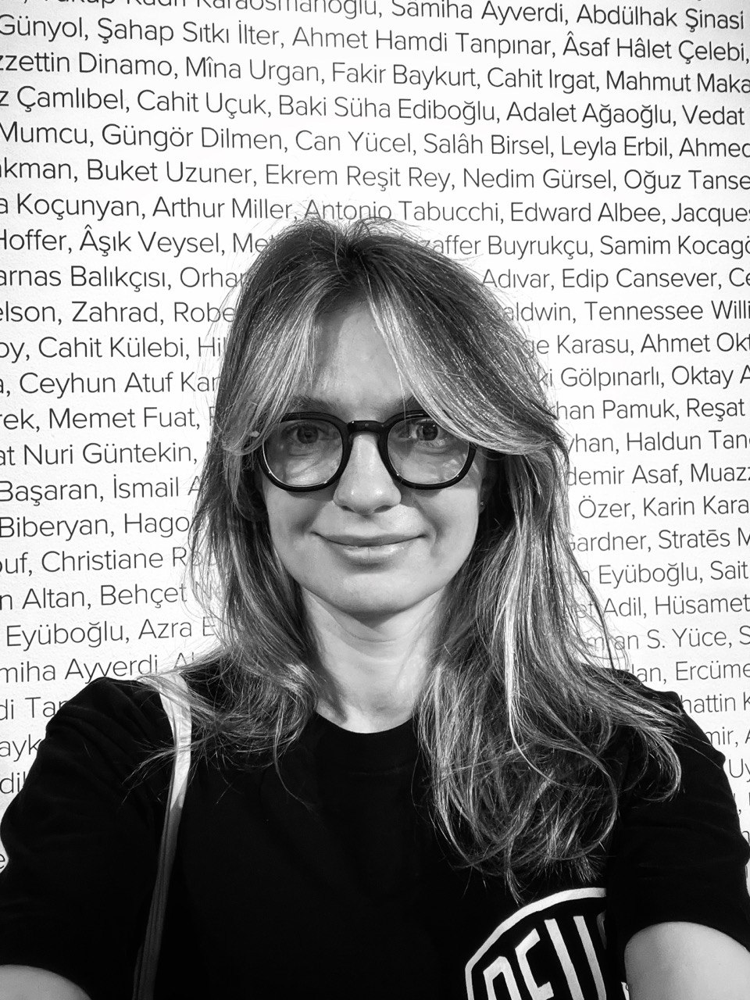

Currently working at the Peredelkino Writers' Village, where she explores the possibilities of typographic posters and experimental typography. Julia has developed her design skills through Dima Barbanel's Editorial Campus and private tutoring (2019/2023), Vladimir Kolomeytsev's Type & Typography course (2024), and holds a MicroMasters in Design Thinking from the Rochester Institute of Technology (2022).
Project Focus: posters, book covers, design concepts, book design, print materials, visual identities, and communication design
Interests: typography, type experiments, abstract graphics, concepts, posters, editorial work, digital images
